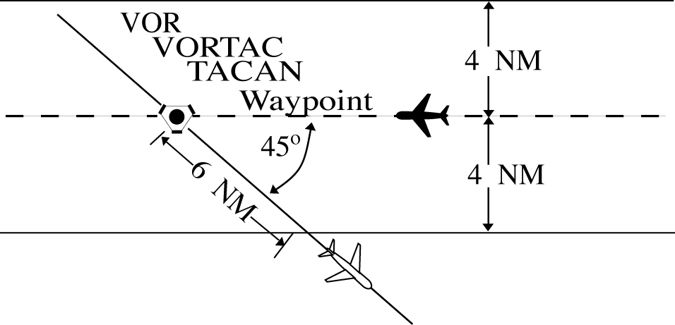
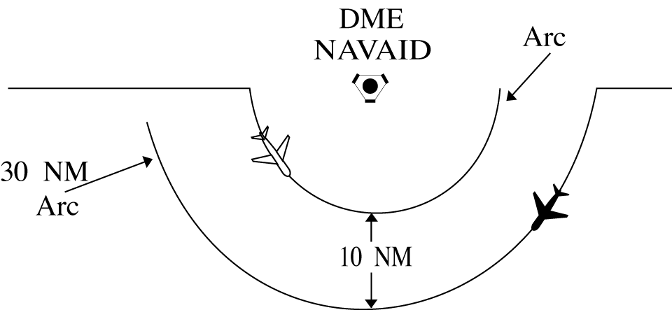
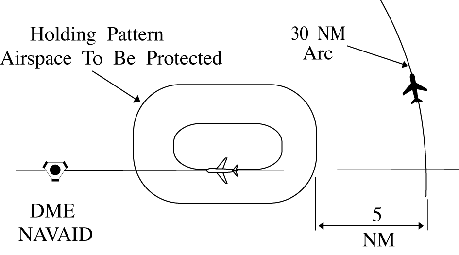
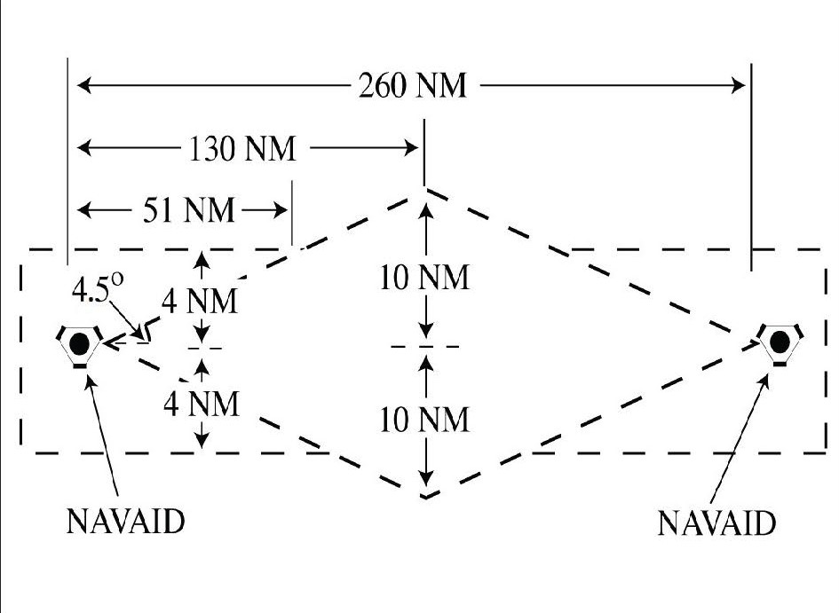
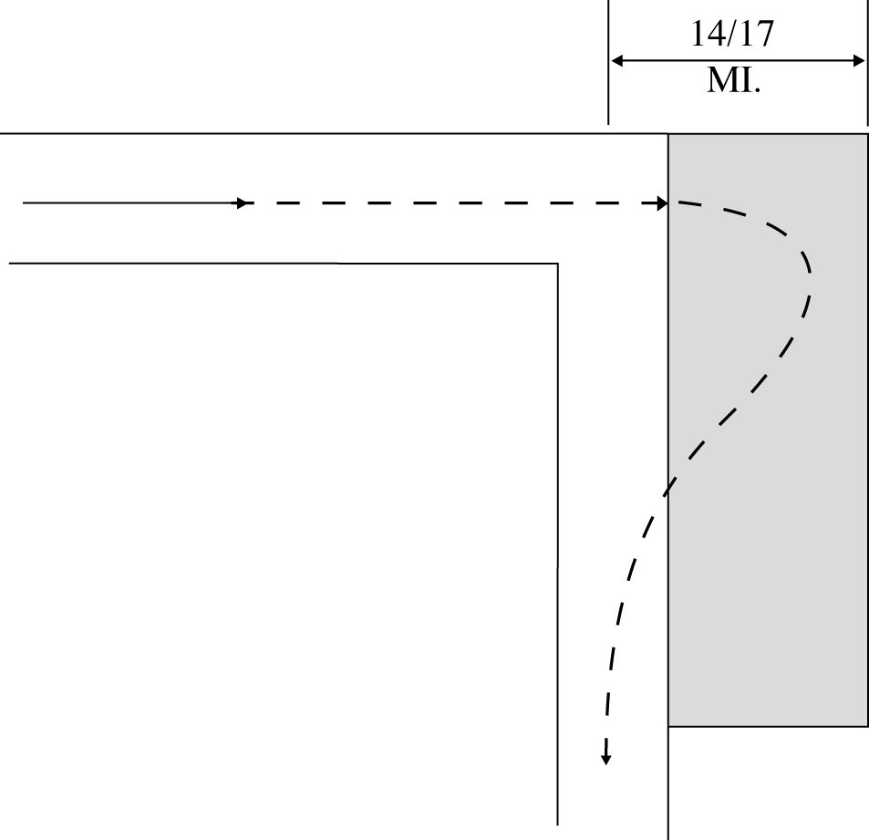
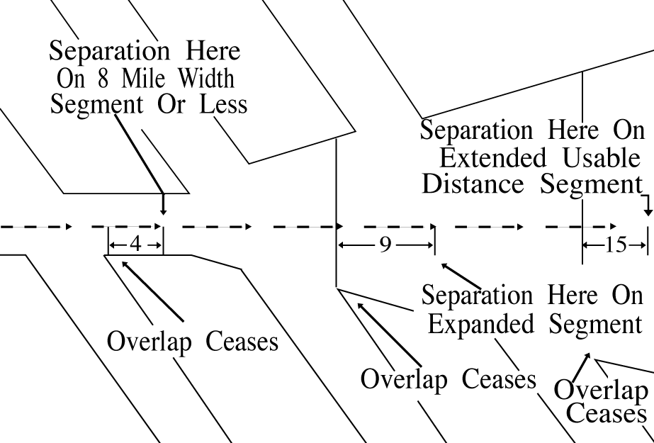

Chapter 6. Nonradar
Section 5. Lateral Separation
6-5-1. SEPARATION METHODS
Separate aircraft by one of the following methods:
- Clear aircraft on different airways or routes whose widths or protected airspace do not overlap.
- Clear aircraft below 18,000 to proceed to and report over or hold at different geographical locations determined visually or by reference to NAVAIDs.
- Clear aircraft to hold over different fixes whose holding pattern airspace areas do not overlap each other or other airspace to be protected.
- Clear departing aircraft to fly specified headings which diverge by at least 45 degrees.
6-5-2. MINIMA ON DIVERGING RADIALS
- Consider separation to exist between aircraft:
- Established on radials of the same NAVAID that diverge by at least 15 degrees when either aircraft is clear of the airspace to be protected for the other aircraft.
- With non-VOR/DME based navigational equipment established on tracks of the same waypoint that diverge by at least 15 degrees when either aircraft is clear of the airspace to be protected for the other aircraft.
FIG 6-5-1Minima on Diverging Radials 
- Use TBL 6-5-1 and TBL 6-5-2 to determine the distance required for various divergence angles to clear the airspace to be protected. For divergence that falls between two values, use the lesser divergence value to obtain the distance.
TBL 6-5-1Non-DME Divergence Distance Minima Divergence (Degrees)
Distance (NM)
15
16
20
12
25
10
30
8
35
7
45
6
55
5
90
4
NOTE: This table is for non-DME application only.
TBL 6-5-2Divergence Distance Minima Divergence (Degrees)
Distance (NM)
Below FL 180
FL 180 through FL 450
15
17
18
20
13
15
25
11
13
30
9
11
35
8
11
45
7
11
55
6
11
90
5
11
NOTE: This table is for DME application and compensates for DME slant‐range error.
6-5-3. DME ARC MINIMA
Apply lateral DME separation by requiring aircraft using DME to fly an arc about a NAVAID at a specified distance using the following minima: (See FIG 6-5-2.)

- Between different arcs about a NAVAID regardless of direction of flight:
- At 35 miles or less from the NAVAID- 10 miles.
- More than 35 miles from the NAVAID- 20 miles.
- Between an arc about a NAVAID and other airspace to be protected: (See FIG 6-5-3.)
FIG 6-5-3DME Arc Minima 
- At 35 miles or less from the NAVAID- 5 miles.
- More than 35 miles from the NAVAID- 10 miles.
6-5-4. MINIMA ALONG OTHER THAN ESTABLISHED AIRWAYS OR ROUTES
Protect airspace along other than established airways or routes as follows: (See FIG 6-5-4.)

- Direct courses and course changes of 15 degrees or less:
- Via NAVAIDs or radials FL 600 and below- 4 miles on each side of the route to a point 51 miles from the NAVAID, then increasing in width on a 4 1/2 degree angle to a width of 10 miles on each side of the route at a distance of 130 miles from the NAVAID.
- Via degree‐distance fixes for aircraft authorized under paragraph 4-4-3, Degree-Distance Route Definition for Military Operations.
- Below FL 180- 4 miles on each side of the route.
- FL 180 to FL 600 inclusive- 10 miles on each side of the route.
- Via degree‐distance fixes for RNAV flights above FL 450- 10 miles on each side of the route.
- GNSS-equipped RNAV aircraft provided nonradar separation on random RNAV routes must be cleared via or reported to be established on point-to-point route segments.
- The points must be published NAVAIDs, waypoints, fixes, or airports recallable from the aircraft's navigation database. The points must be displayed on controller video maps or depicted on the controller chart displayed at the control position. The maximum distance between points must not exceed 500 miles.
- Protect 4 miles either side of the route centerline.
- Assigned altitudes must be at or above the highest MIA along the projected route segment being flown, including the protected airspace of that route segment.
- When the GNSS aircraft is being provided radar service and is transitioning to nonradar airspace, provide clearance direct to the named point in nonradar airspace in accordance with subparagraphs a4(a) through (c).
- If transitioning between two random point-to-point routes, GNSS-equipped aircraft beingprovided nonradar separation may be cleared via an impromptu route when the following conditions are met:
- The impromptu route segment must not exceed the distance to the nearest available recallable fix/waypoint consistent with the direction of flight; and
- Assigned altitudes must be at or above the highest MIA along the projected route segment being flown; and
- Aircraft conducting the impromptu route must be separated vertically from other aircraft until established on the new point‐to‐point route.
- When course change is 16 degrees through 90 degrees, protect the airspace on the overflown side beginning at the point where the course changes as follows: (See FIG 6-5-5.)
FIG 6-5-5Overflown Side Minima 
- When course change is 91 degrees through 180 degrees, protect the airspace on the overflown side beginning at the point where the course changes as follows: (See FIG 6-5-6.)
- After the course changes specified in subparagraphs b or chave been completed and the aircraft is back on course, the appropriate minima in subparagraph a may be used.
6-5-5. RNAV MINIMA- DIVERGING/CROSSING COURSES
Consider lateral separation to exist when an RNAV aircraft is beyond the point where the lateral protected airspace of that aircraft has ceased to overlap the lateral protected airspace of another by at least:
(See FIG 6-5-7 and FIG 6-5-8.)
